АрхитектураArchitecture
Каждое здание спрятано в природеEvery building is hidden in nature
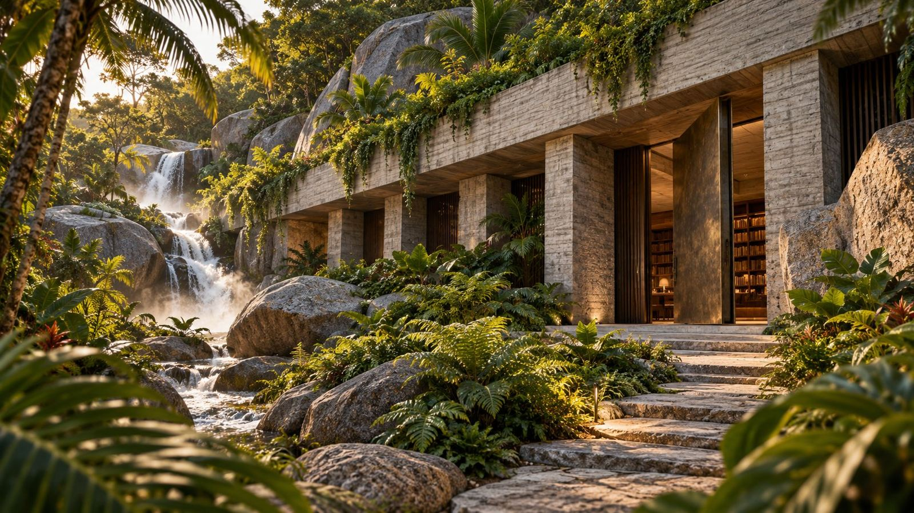
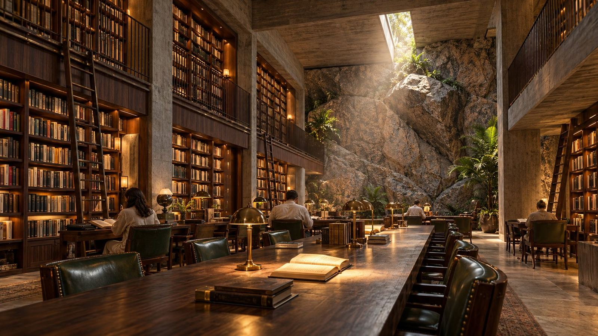
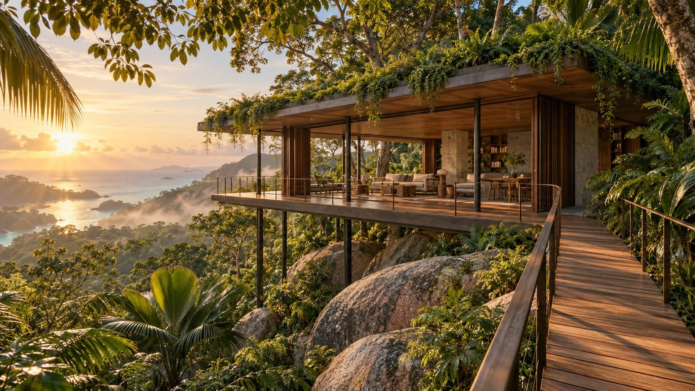

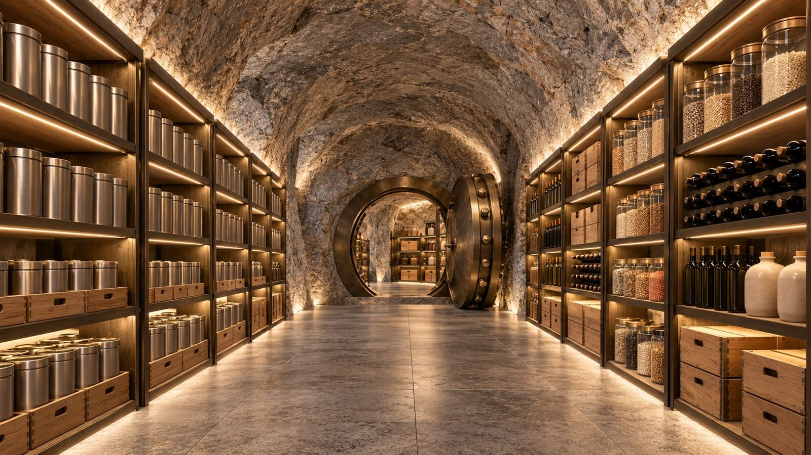
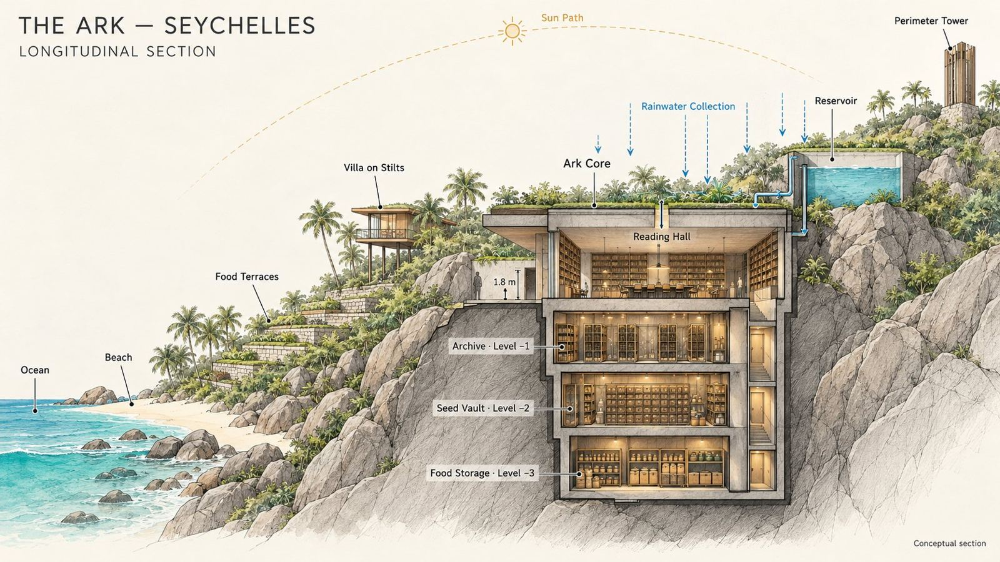
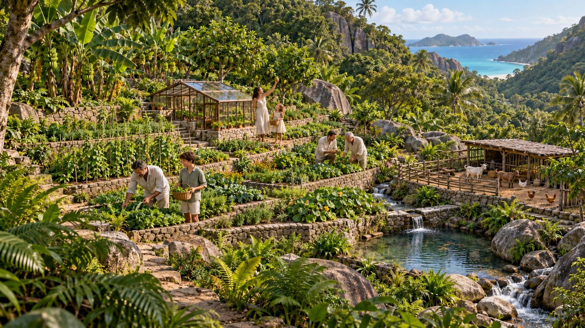
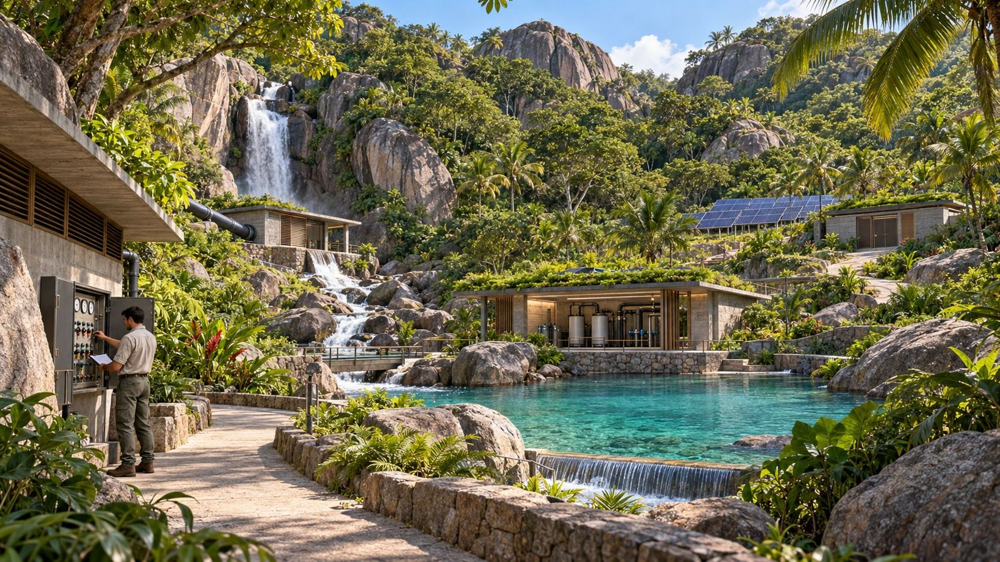
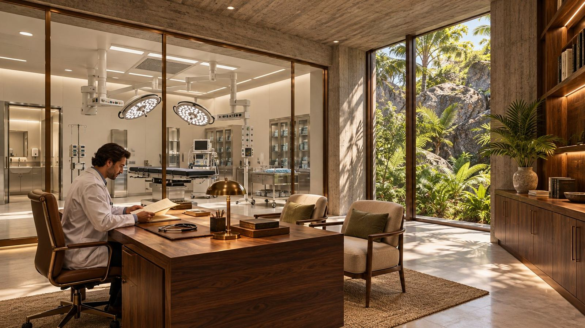
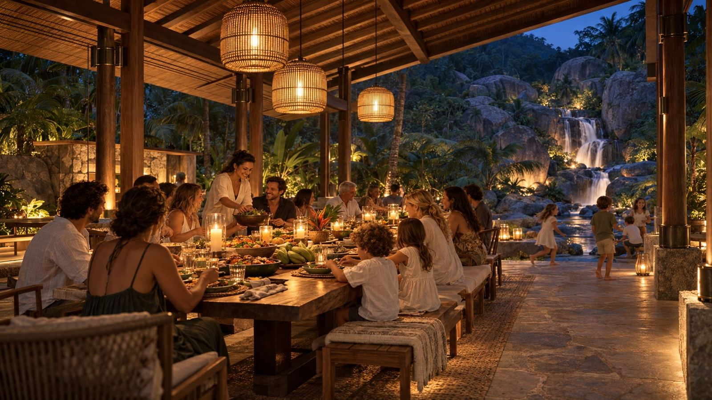
02 · КовчегThe Ark
Частное поселение для одной большой семьи или нескольких семей: спрятано в природе, полностью автономно и готово принять своих жителей в любой момент.A private settlement for one extended family or several families: hidden in nature, fully autonomous and ready to receive its residents at any moment.
Шесть принциповSix principles
Своя еда, вода и энергия на годы вперёд.Its own food, water and energy for years ahead.
Без интернета и камер. Аварийная связь только по протоколу.No internet, no cameras. Emergency comms by protocol only.
От медпункта до клиники с операционной и врачом на месте.From a medical station to a clinic with an operating room and resident doctor.
Библиотека бумажных книг, архив и семенной фонд в скале.A library of printed books, an archive and a seed vault in the rock.
Общий стол, школа для детей, свой круг людей.A shared table, a school, a trusted circle.
От выбора земли до запасов, персонала и регламентов.From land to provisions, staff and protocols.
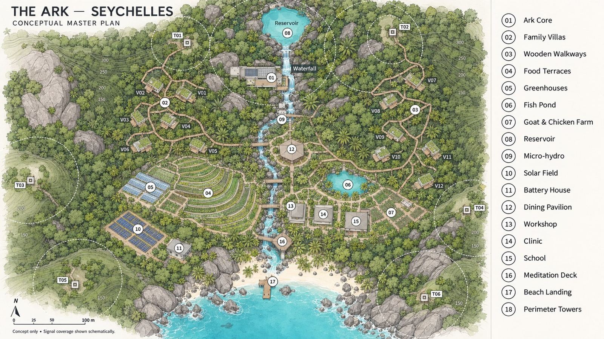
АрхитектураArchitecture









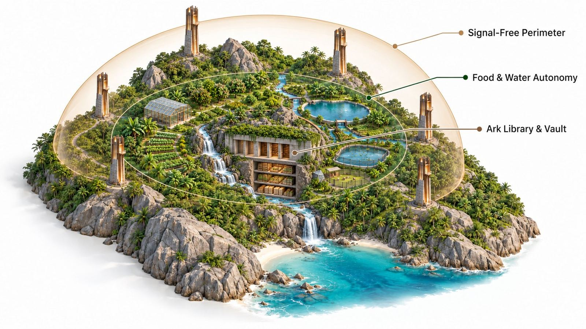
ЗащитаProtection
Удалённость, экранирование и контроль эфира в рамках закона страны размещения.Remoteness, shielding and spectrum control within the law of the host country.
Еда, вода и энергия производятся внутри контура.Food, water and energy produced inside the perimeter.
Библиотека, архив, семенной фонд и укрытие в скале.Library, archive, seed vault and shelter in the rock.
КонфигурацияConfiguration
Каждый ковчег собирается под заказчика: у воды, в джунглях или в горах. Базовая комплектация есть всегда.Every Ark is built around its client: by the water, in the jungle or in the mountains. The core package is always included.
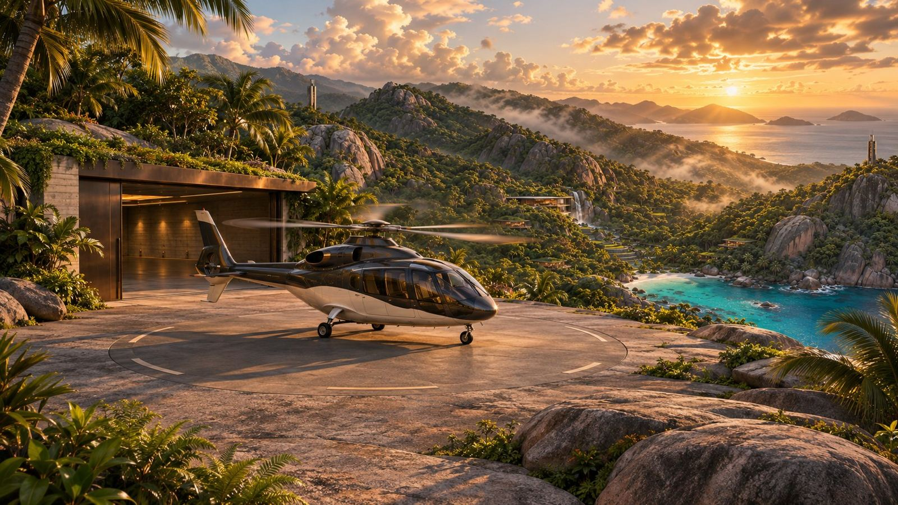
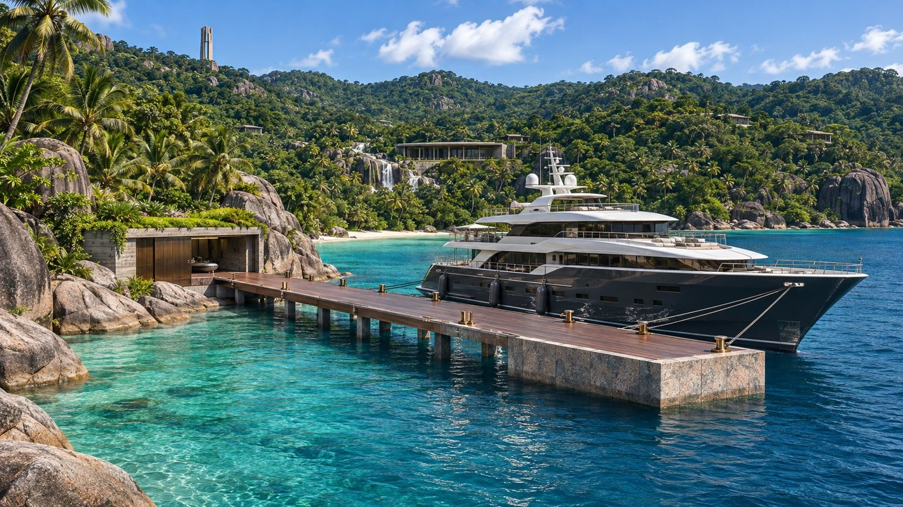
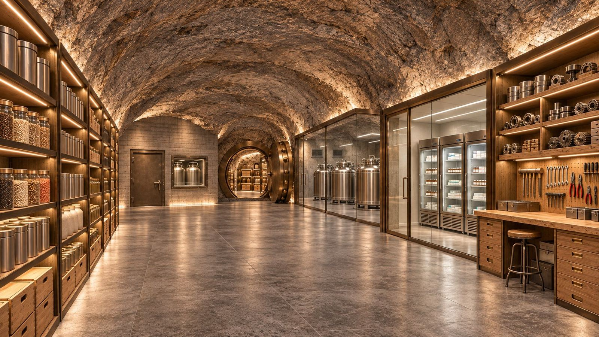
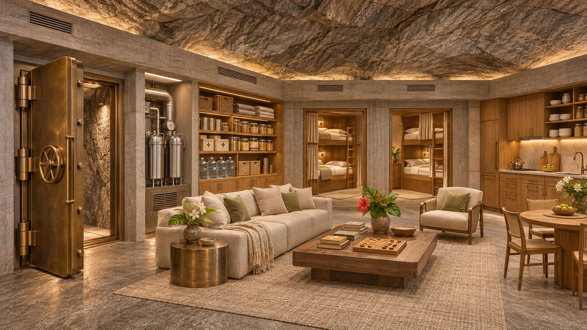
Где строитьWhere to build
Отбор по научным данным: устойчивость к коллапсу, модель ядерной зимы, индекс миролюбия, право иностранцев на землю. Нажмите на точку на карте.Selected using research: resilience to collapse, the nuclear-winter model, the Global Peace Index and foreign land rights. Tap a pin on the map.
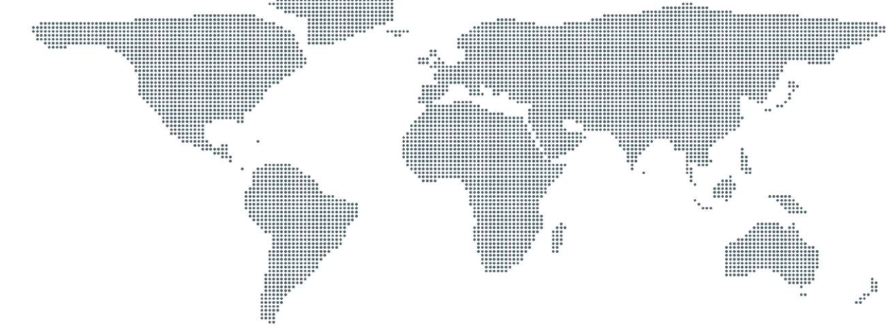
Оценки по шкале 1–10 — наше экспертное суждение на основе King & Jones 2021, Xia et al. 2022, GPI 2026, ND-GAIN 2023 и законодательства стран (ноябрь 2026).Scores on a 1–10 scale are our expert judgement based on King & Jones 2021, Xia et al. 2022, GPI 2026, ND-GAIN 2023 and national legislation (November 2026).
Как мы работаемHow we work
100%
Открытая смета. Строим как для себя и не раздуваем бюджет.An open budget. We build as if for ourselves and never inflate it.
+20%
Фиксированный процент от каждого потраченного доллара.A fixed share of every dollar spent.
от $15 млн$15m+
Ограниченное число заказов в год.A limited number of commissions per year.
Готовые кейсы строительства поселений в Украине.Completed settlement projects in Ukraine.
От анкеты до заселения без лишних этапов.From questionnaire to move-in with no wasted stages.
Административные возможности и контакты по всему миру.Administrative capabilities and connections worldwide.
Работаем как для себя и отвечаем за каждый доллар.We build as if for ourselves and answer for every dollar.
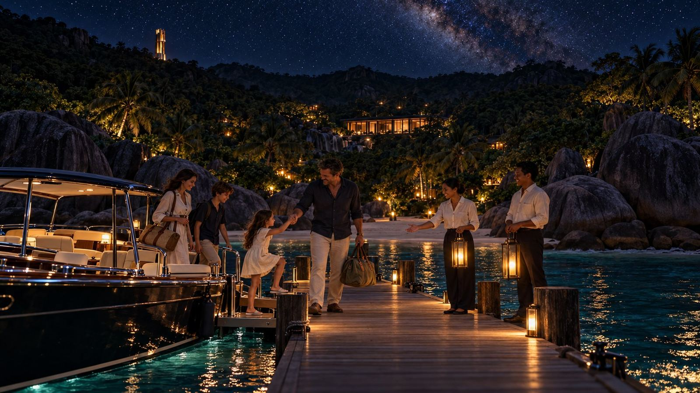
03
Начать →Start →